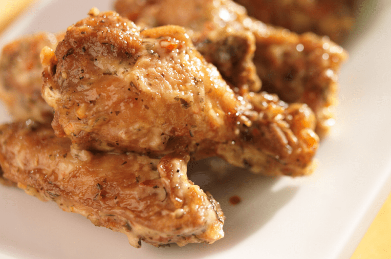

Garlic Parmesan Wings

A gameday classic. Do these traditional cheesy, buttery, garlicky wings even need a description?
Ingredients
Seasonings
- 12 pieces of chicken wings
- 1/4 teaspoon cayenne powder
- 1/2 teaspoon paprika
- 1 tablespoon garlic powder
- 1/2 teaspoon black pepper
- Salt to taste
Garlic Parmesan Sauce
- 3 tablespoons unsalted butter
- 1 tablespoon garlic powder
- 1 teaspoon finely chopped garlic
- 1/2 cup parmesan cheese
Steps
- Pat chicken wings dry and place in a bowl. Sprinkle salt, cayenne powder, paprika, black pepper, and garlic powder over the chicken. Toss until evenly coated.
- Bake the wings at 350°F for 15 minutes.
- While baking, make the garlic parmesan sauce. Melt butter in a saucepan over medium heat. Stir in the garlic powder and minced garlic.
- Add the parmesan cheese and mix. Turn off the head as soon as the cheese is incorporated with the mixture.
- Place the baked wings in a bowl. Pour the garlic parmesan sauce over the wings and toss to coat evenly.
- Garnish the wings with fresh parsley and enjoy!